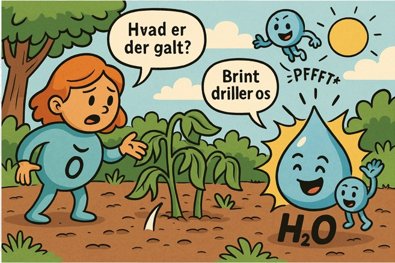

Faglige fortællinger, eleverne husker
AI er stærk til at gøre tørt fagstof mere levende, her er tre konkrete eksempler fra materialet:
- Kommaregler som remser: "Jeg spiser pizza, slik og is, noget man adskiller, så listen blir' præcis" (opremsning); "Jeg gamer hele natten, og jeg sover i timen, to sætninger kan skilles, et komma holder rimen" (to helsætninger); "Min kat, som er tyk, vælter glasset igen, noget som man tilføjer, men sætningen kan stå selv, min ven" (indskud).
- Retoriske appelformer som "personligheder": Ethos = den troværdige ven, Pathos = den dramatiske, Logos = nørden med Excel, AI kan lave små memes, så eleverne husker forskellen.
- Statistik som værktøjskasse: Gennemsnit = hammer (slår på midten), Median = sav (deler i to), Typetal = megafon (det mest råbte tal).
- Ideologier som "datingcards" i samfundsfag: fx "Liberalisme: elsker frihed, hader regler" og "Konservatisme: søger stabilitet og tradition", humoristiske, men fagligt korrekte karakterkort.


Eventyret om Ilt, Brint og Vand
Et konkret eksempel på, hvordan AI kan gøre naturfagligt stof levende: en kort børnehistorie om atomerne Ilt og Brint, der forklarer, hvordan vand (H₂O) bliver til.

En dag gik Ilt en tur gennem engen. Hun nød solen og de grønne blade, men
pludselig så hun, at planterne så triste ud.
"Hvad er der galt?" spurgte hun. "I får jo masser af ilt fra mig!"
Planterne sukkede: "Det er Brint. Han flyver rundt og driller os hele tiden. Han laver små pffft-lyde og siger, at vi aldrig kan blive stærke uden ham."
Ilt rynkede panden. "Sådan skal det ikke være!" Hun løb efter Brint for at tale ham til rette. Men Brint var hurtig, og pludselig stødte hun ind i to Brinter på én gang.
Vupti! Et uheld skete, og ud af mødet dryppede noget helt nyt: klare, skinnende dråber.
"Vand!" råbte planterne i kor. "Det var lige det, vi manglede!" Nu kunne de endelig vokse og strække sig mod himlen.
Ilt smilede: "Så det var det, Brint ville vise jer. Vi hører sammen." Og alle fejrede det nye fællesskab, H₂O, som blev livets største gave.
Tekst og billede: ChatGPT · Musik: Suno.ai
Kildekritik i praksis

Inspireret af KWL-modellen (Ogle, 1986) kan I bruge en tre-felt-model til elevarbejde: Ved (viden vi er sikre på: bog, lærer, erfaring, eksperiment), Tror (gæt, idéer, hypoteser) og Fandt (vi fandt det i en kilde, skriv kilden under).
Ved billedsøgning: Vælg et billede og skriv "Kilde: [titel/side/forfatter]" med et lille ikon (fx globus for Wikipedia, bog, blog). Tal med eleverne om, hvem der har lavet billedet, og hvorfor det ligger der. Klasseregel: Intet billede uden kildefelt.
- Hvem har lavet det? (afsender: navn, organisation, faglighed)
- Hvorfor er det lavet? (formål: informere, sælge, påvirke, underholde)
- Hvornår er det lavet? (aktualitet: dato/opdateret)
Husk altid at skrive kilde: titel + afsender + år.
→ Hent elevark "Fra gæt til viden" (PDF)
AI-fodspor i elevernes afleveringer

Et gennemsigtighedsredskab, hvor eleven dokumenterer sin brug af AI i fem trin:
- Min prompt (inkl. værktøj + dato/tidspunkt)
- AI-udkast (kort: max 8 linjer eller en skitse)
- Min vurdering (3 styrker / 3 svagheder)
- Kildetjek (2-3 uafhængige kilder: titel, afsender, år/link)
- Min egen tekst/konklusion
→ Hent elevark "AI-fodspor" (Word)
Suppler gerne med et kildehierarki (inspireret af Dahl, 1999, samt Andrejsen & Skov, 2013): primære kilder (originaldata, interviews, lovtekst), sekundære (artikler, rapporter, analyser) og tertiære (leksika/opsummeringer). Krav: Mindst 3 kilder fra mindst 2 typer, og eleven skal skrive hvorfor kilderne er valgt.
Differentiering med AI
LIX-eksempel (dansk): En tekst fra bogen "Gudernes Ø" (Gyldendal fagportal, 0.-2. klasse) blev af ChatGPT omskrevet fra LIX 15 til LIX 30, samme fortælling om et offerritual til guderne, men i to sproglige sværhedsgrader. Et konkret redskab til at differentiere tekster efter elevernes læseniveau.
Brøkopgaver (matematik): Et sci-fi-tema med robotbatterier og rumskibs-energi, opdelt i tre niveauer: A (lav: simpel brøkregning), B (middel: sammensat kontekst, flere trin) og C (høj: flere brøker, ræsonnement, et forskningsrumskib med tre energikredsløb).
AI, AppWriter og læringsacceleratorer, tre veje til samme mål
Mange elever med skriftsproglige vanskeligheder har allerede et helt værktøjsskab til rådighed, og det er vigtigt, at AI ikke opfattes som endnu et konkurrerende program. AppWriter og Microsofts indbyggede læringsacceleratorer er begge stærke til at omsætte tanker til korrekt skrevet tekst og tekst til forståelig lyd. Det, de sjældnere kan hjælpe med, er selve tanken, altså at finde ud af, hvad der egentlig skal stå, før noget som helst skal skrives eller læses op. Det er her SkoleGPT kan spille en anden rolle som skrivemakker og sprogmakker, i stedet for endnu et retteprogram.
Det er værd at opdatere navnene, siden en del har ændret sig på få år. Microsofts læringsværktøjer hedder i dag læringsacceleratorer, og ved siden af det velkendte Forenklet læser og Læsefremskridt er der kommet en funktion ved navn Læsecoach, som selv bruger AI til at generere korte og personlige øvelsestekster tilpasset elevens niveau og interesser. AppWriter er til gengæld fortsat et rendyrket kompenserende værktøj uden generativ AI. De tre værktøjer dækker altså i dag tre forskellige behov uden at overlappe ret meget, selvom det billede sagtens kan ændre sig igen om et år eller to.
Elevens perspektiv
For en elev, der kæmper med at få ord på papir, ligger den største barriere ofte før selve skrivningen begynder. Eleven ved måske godt, hvad han eller hun gerne vil sige om et emne, men når ikke frem til at få det skrevet, fordi opgaven med at stave og formulere på samme tid bliver for stor at løfte alene. Her kan SkoleGPT fungere som en samtalepartner, eleven roligt kan tale, hvorefter AI hjælper med at samle tankerne i en sammenhængende form, som eleven selv kan arbejde videre med i AppWriter eller Word. Det er en anden indgang end oplæsning og ordforslag, fordi den tager fat om selve formuleringen frem for stavningen.
SkoleGPT kan også fungere som en sprogmakker, eleven kan øve sig med uden den sociale risiko, der ellers følger med at svare forkert foran hele klassen. En elev kan bede AI om at forklare et svært ord på flere forskellige måder, indtil det giver mening, eller øve sig i at genfortælle noget mundtligt, før det skal skrives ned. Det vigtigste at holde fast i er, at AI her fungerer som et stillads under skriveprocessen og ikke som en erstatning for den. Ligesom Videnstigen i kapitel 4 gør op med, at ChatGPT skal levere hele svaret, bør eleven fortsat eje sin egen tekst, og AI-fodsporet fra tidligere i dette kapitel er et oplagt redskab til at gøre den brug synlig, også når AI bruges som et kompenserende hjælpemiddel og ikke kun som en faglig genvej.
Lærerens forberedelse
For underviseren ligger den største gevinst nok i forberedelsen frem for i selve undervisningssituationen. Inden en tekst eller opgave lander hos en elev med skriftsproglige vanskeligheder, kan en LLM bruges til at omskrive opgaveteksten til et lavere sprogligt niveau, dele en lang instruktion op i færre og tydeligere trin, eller lave en kort ordliste med enkle forklaringer til de fagord, eleven alligevel vil støde på. Det er en naturlig forlængelse af differentieringsarbejdet, der allerede er beskrevet tidligere i dette kapitel, blot rettet mod den elevgruppe, der har mest brug for et lavt sprogligt indgangsniveau.
Det er værd at holde sig for øje, at den slags forberedelse bør ske med generelt opgavemateriale og aldrig med den enkelte elevs personlige oplysninger, diagnoser eller testresultater indtastet som en del af prompten. Reglen fra kapitel 3 gælder også her, kun SkoleGPT må bruges direkte sammen med eleverne, og selv i forberedelsen bør ingen personfølsomme oplysninger røres, uanset hvilken chatbot der bruges.
Sammenholdt med Læsefremskridt og Insights i Teams, som allerede giver et billede af elevens læseudvikling, kan SkoleGPT bruges til at oversætte den viden til konkrete justeringer af undervisningsmaterialet, før timen overhovedet starter. På den måde bliver AI ikke endnu en opgave i en travl hverdag, men et redskab, der sparer tid netop dér, hvor forberedelsen plejer at tage længst.
AppWriter er specialiseret i at omsætte lyd og ord til korrekt skrevet og læst tekst, med ordforslag og oplæsning trænet specifikt til ordblinde mønstre. Microsofts læringsacceleratorer, som Forenklet læser og Læsecoach, ligger allerede indbygget i Word og Teams og giver et solidt grundlag uden ekstra login eller ekstra licens. SkoleGPT er det eneste af de tre, der kan hjælpe eleven med selve tanken bag teksten, som skrivemakker og sprogmakker, før ordene overhovedet skal ned på papiret.
Vil du se, hvordan de tre værktøjer konkret bruges i hverdagen? Der er samlet en gennemgang af AppWriter, M365-læringsværktøjer og SkoleGPT i tillægget om skriveredskaber, som ligger uden for de syv kapitler og altid kan besøges igen, uanset hvor langt du er nået.
Flere praktiske ressourcer
- SkoleGPT (skolegpt.dk) tilbyder færdige forløb om bl.a. prompt engineering, kodning (Scratch, micro:bit, LEGO Spike), BIAS-perspektiver, "Maskinrummet" (værktøjer fra Aarhus Universitet, der viser hvordan sprogmodeller fungerer), AI i sprogfagene, matematik og dansk.
- Meebooks AI-assistent: En planlægningsassistent, hvor du indtaster emne, klassetrin og antal lektioner, og vælger indhold (fagligt indhold, opgaver, gruppeopgaver, klassediskussioner, lærervejledning). Bygger på officielle faghæfter fra UVM og er udviklet med GDPR-hensyn.
- "Eventyret om Ilt, Brint og Vand": Et AI-genereret pædagogisk eventyr, der forklarer den kemiske binding H₂O gennem en børnehistorie om figurerne Ilt og Brint, et godt eksempel på kreativ AI-formidling af naturfagligt stof.